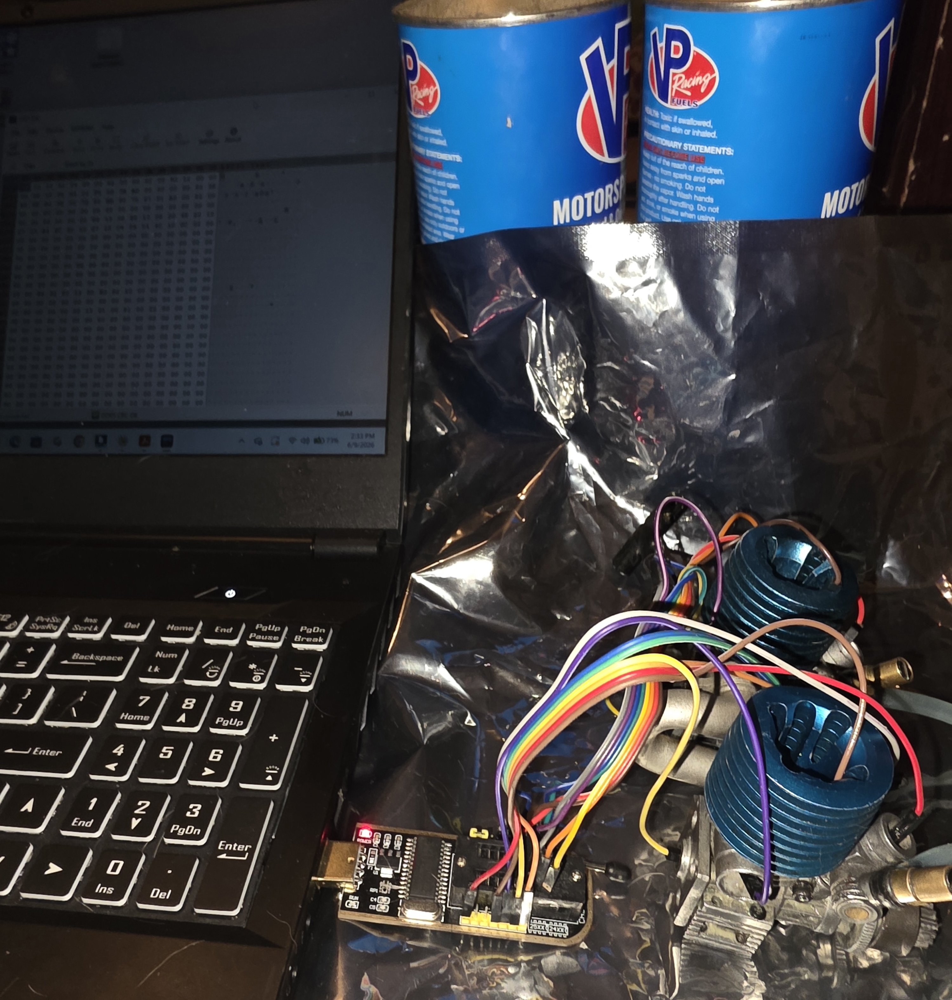
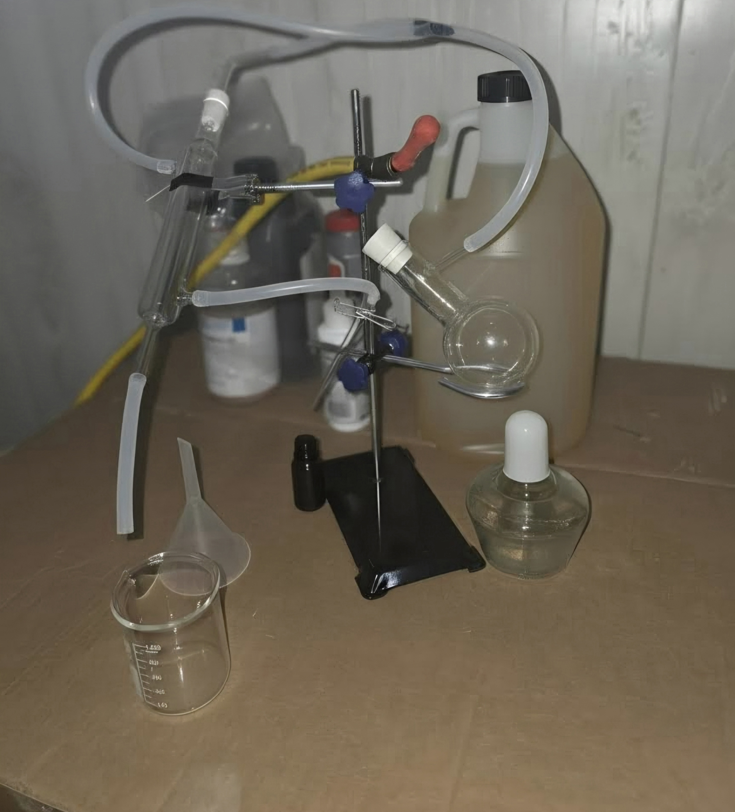

Bergen, Norway | Est. 1999
Precision
Engine
Protection
Advanced nitro RC engine additives engineered to Norwegian precision standards. Not found on any store shelf.
Advanced nitro RC engine additives engineered to Norwegian precision standards. Not found on any store shelf.
Founded in Bergen, Norway in 1999, MPCZ was born from the belief that nitro RC engines deserve the same level of precision chemistry applied to full-scale racing combustion motors. We refine and modify industry-grade engine protectants specifically for the extreme conditions inside a nitro RC engine; high RPM, elevated heat, and tight tolerances that leave no margin for error.
A 24-hour runtime test was conducted on a series of nitro motors. The two engines pictured here are identical and very touchy .07 RC nitro engines: one operating on untreated fuel and the other using MPCZ additives. Both engines were supplied with external fuel reservoirs and run under consistent load conditions; the motor running our MPCZ formula never seized. Performance, temperature behavior, and wear characteristics were continuously monitored and recorded via a CH314A USB computer chip and custom tuning software.

MPCZ products are not found in hobby stores or general retailers. Each formula is purpose-built for nitro RC use and distributed exclusively to serious competitors and enthusiasts.

Our formulas contain advanced ceramics, zinc-based anti-wear compounds, synthetic esters, PTFE friction reducers, and molybdenum disulfide technology; each engineered in precise ratios for nitro RC fuel systems. Each MPCZ formula is produced through an ultra-refined cold vacuum distillation process, removing impurities at the molecular level to achieve a purity and consistency impossible through conventional blending methods. Every batch is compounded in-house using laboratory-grade glassware and controlled distillation equipment, ensuring consistency from formula to formula and bottle to bottle.
Twenty-five years of development driven by feedback from the track. MPCZ has been refined through thousands of hours of on-track use across multiple nitro RC racing disciplines worldwide.
Each MPCZ product is formulated for a specific use case. Choose the formula that matches your engine, your mileage, and your ambition.
Everyday nitro engine protection. Maintains tolerance, reduces wear, and extends service intervals for regular running.
High mileage and worn engine formula. Fills micro-abrasions, restores compression, and extends engine life.
Maximum competition performance. Reduces friction to the absolute minimum for peak power output at the limit.
2-stroke gasoline engine formula. Purpose-built for gas-powered RC engines running without nitro methanol.